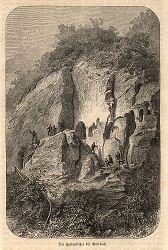

| In Deutsch |
| In Deutsch |
Überlinger Stollen
Code Magnesit
Useful Information
| Location: |
Überlingen. A81 (E41) to Kreuz Hegau, A98 (E54) towards Stockach/Lindau/Friedrichshafen, Exit Überlingen, towards Überlingen K7772, at the city limit turn right into Uhlandstraße, then Auf dem Stein, turn right into Goldbacherstraße. Meeting point at the Wirtshaus zum Felsen. |
| Open: |
After appointment. [2007] |
| Fee: |
Donations accepted. [2007] |
| Classification: |
 World War II Bunker World War II Bunker
|
| Light: | electric |
| Dimension: | L=4,000m, T=12°C. |
| Guided tours: | D=1-2h. |
| Photography: | |
| Accessibility: | |
| Bibliography: |
Oswald Burger (1997):
Der Stollen,
2. Aufl. 1997 Edition Isele Eggingen
Anon (): Goldbacher Stollen und ehemaliges KZ Aufkirch, Faltblatt, Verein Dokumentationsstätte Goldbacher Stollen |
| Address: |
Dokumentationsstätte Goldbacher Stollen und KZ Aufkirch e.V., 88662 Überlingen.
E-mail: |
| As far as we know this information was accurate when it was published (see years in brackets), but may have changed since then. Please check rates and details directly with the companies in question if you need more recent info. |
|
History
| 28-APR-1944 | bombardment of the industrial complex at Friedrichshafen. | |
| OCT-1944 | start of construction. | |
| APR-1945 | end of construction. |
Description
|  |
| Image: Die Heidenlöcher bei Goldbach. Historic engraving. |
The Überlinger Stollen (Tunnels of Überlingen), also called Goldbacher Stollen, was built between 1944 and 1945 by the Nazis who forced some 800 inhabitants of KZ Dachau to work here. The tunnel was planned to host the production of several companies from Friedrichshafen, like Zeppelin, Maybach, Dornier and Zahnradfabrik. The construction was triggered by the bombardment of the industrial complex at Friedrichshafen on 28-APR-1944. The construction was done by forced laborers, some 800 inhabitants of the KZ Dachau who first had to construct shacks at Aufkirch from where they worked at the tunnels. The project hat the fictitious name Magnesit. The construction ended with the end of the war, in April 1945, when french troops arrived at the Lake Constanz. The tunnel was still incomplete at this time, so it was never used for production.
After the war the French army tried to destroy the tunnels, by blowing up the entrance area. This is not really easy to understand, as the tunnels were incomplete, never used for production or anything else, and actually too wet to be used. Probably they did it just for completeness' sake, because they blew up any Nazi construction they discovered. The collapsed cliff face produce a huge amount of debris, which was levelled and today forms a huge artificial terrace where now the camping ground is located. To make the tunnels accessible again, a new entrance tunnel had to be dug. The tunnels were used to build a memorial site for the forced laborers and the other prisoners of the KZ Dachau. They also show the economic background, the airplane and Zeppelin development at Friedrichshafen. And the situation during the work underground is displayed on site.
The reason why the tunnels were constructed here is simply the rock. It is a rather soft kind of conglomerate called Molasse. Hard, round pebbles stick together by a matrix of calcareous sand, which is not completely converted into sandstone and still rather soft. Tis rock can be dug with a wooden stick, by scratching out the soft sand and the hard pepples fall out, but still the rock stands pretty good. This was used from early times for the construction of cave dwellings. Probably during the Middle Ages and especially during the 30 Years War caves were constructed in the rock. The were called Heidenlöcher (or Heidenhöhlen) which simply means pagan holes. This implies they were from pre-Christian times, which means actually early Roman times. But this is very unlikely, although details of the early beginnings are actually unknown. Most of the caves have been destroyed during the construction of a new road in the 19th century.
From the geologic view, the Spetzgarter Tobel (gorge of Spetzgarten) north of Goldbach has to be mentioned. Here the brook Killbach has cut up to 65m deep into the soft Molasse conglomerate. This geotope shows the so-called Heidenlöcher-layers of the Obere Meeresmolasse. It is a protected Natural Monument. The gorge is worth a visit because of its waterfalls and dolly tubs.
 Search Google for "Überlinger Stollen"
Search Google for "Überlinger Stollen" Google Earth Placemark
Google Earth Placemark Der Überlinger Stollen im Internet V. 0.3.0.0 Release: 2001-01-12,
official website.
(
Der Überlinger Stollen im Internet V. 0.3.0.0 Release: 2001-01-12,
official website.
(


 )
)